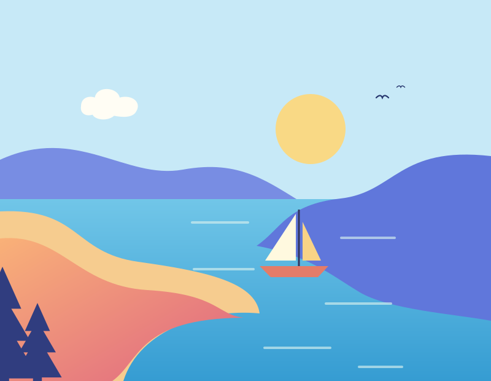
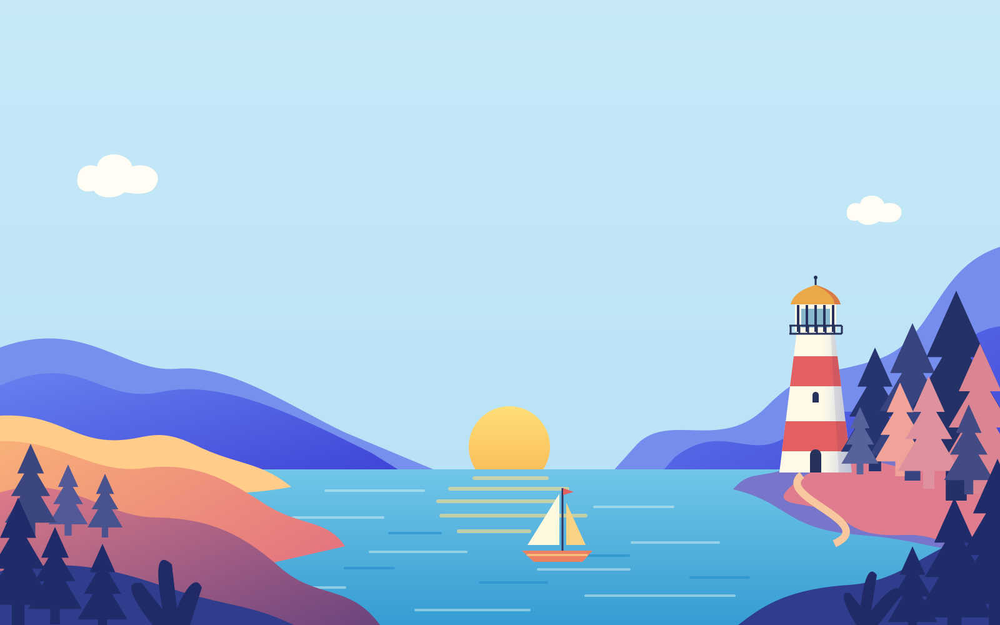
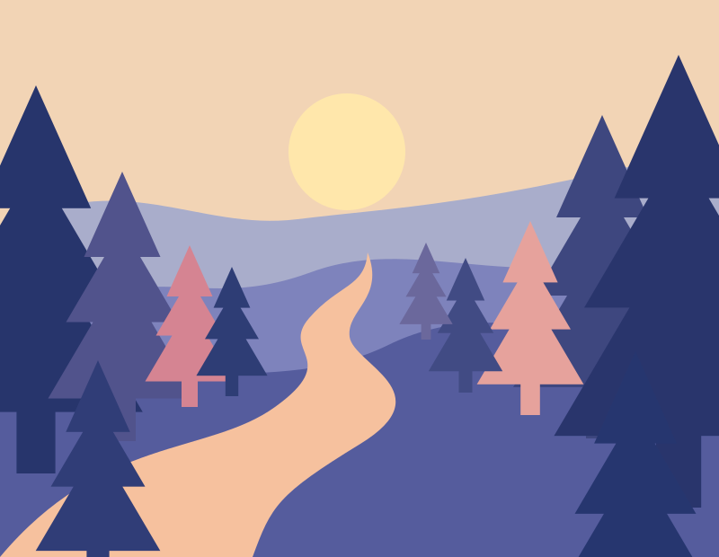
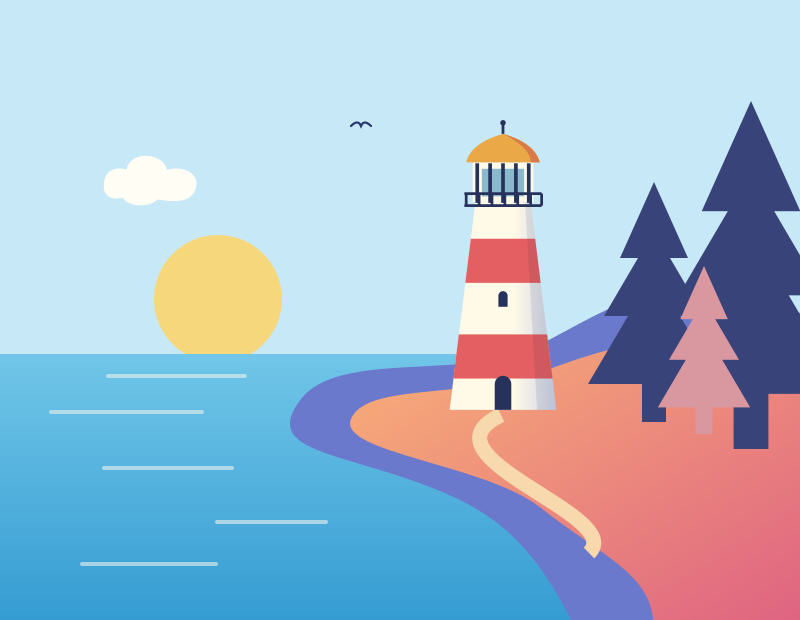
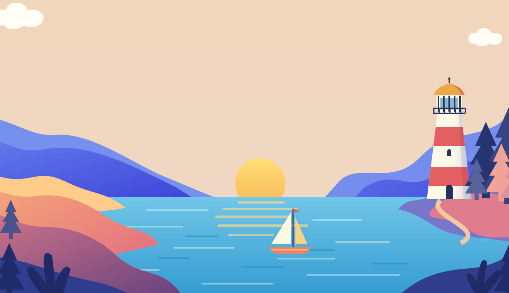

01Find your quiet cove
Bare feet, a good book, and the gentle company of the sea. Welcome to Shell Cove.

A little world away
Follow the tide. Forget the time.
Let’s exploreSalt in the airRoom to breathe
Paths less travelledA little curiosity goes a long way
Time on your sideThere’s no need to rush
01 / FIND YOUR LITTLE ESCAPE
A hidden cove. A winding path. A view worth the climb. Some of the best things happen when you take the long way.

01Bare feet, a good book, and the gentle company of the sea. Welcome to Shell Cove.

02Follow the pines to Fern Lookout. Take a pause wherever the light finds you.

03The old lighthouse, a picnic on the grass, and a sky that saves its best for last.

02 / A DIFFERENT PACE
We imagined a place where the path to the beach is the scenic route, lunch lasts a little longer, and the only thing on the agenda is a good day outside.
That’s Nature Island. Small enough to feel like your own. Full of reasons to stay out a little longer.
Find your island rhythm03 / ONE DAY, YOUR WAY
Choose a mood. We’ll put a little island day together for you. There’s always room to wander.
An imaginary itinerary. No reservations, just inspiration.
SEE YOU ON ISLAND TIME